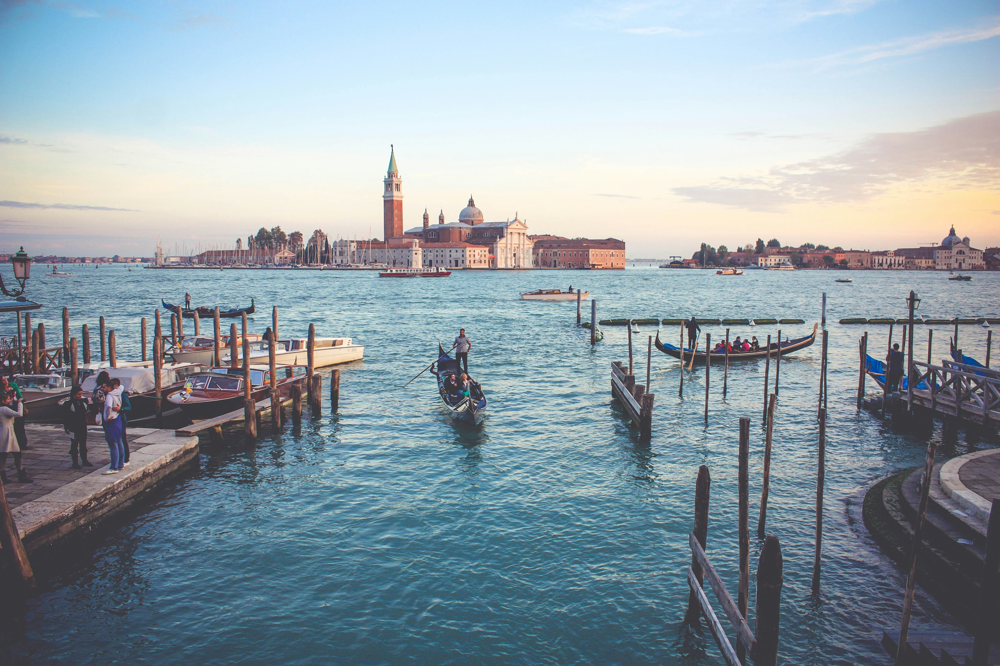
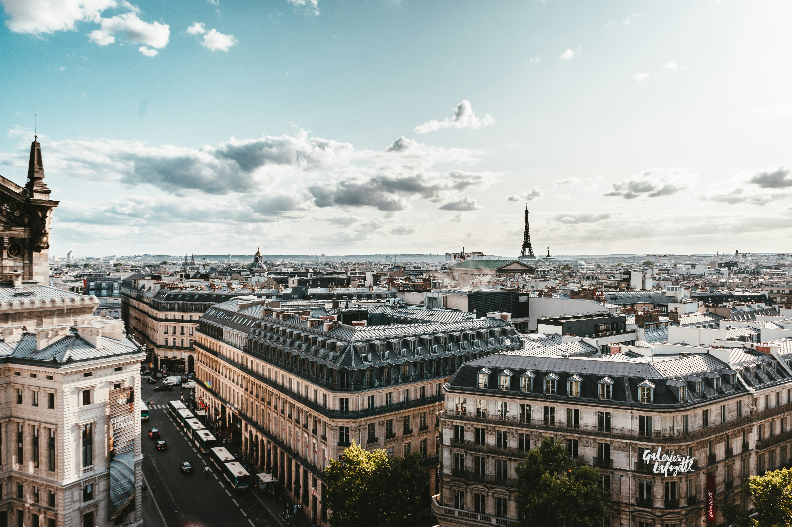

Our first day
We begin with an early Eurostar journey from London to Belgium before continuing to Bruges. It’s a memorable first day of the tour, and once we meet in London I’ll guide everyone through things as we go.
🛂 Passport & essentials
Keep your passport, medications, chargers and any important items in your day bag rather than packed away inside your main suitcase.
Having those essentials easy to reach makes the first travel day much smoother.
🧳 Luggage
There is a short walk through St Pancras before boarding the train, so a practical suitcase that rolls easily tends to make the morning feel smoother and easier.
Most people find that packing a little lighter makes the journey more comfortable overall.
🎒 Ready to begin exploring
We arrive into Bruges and begin sightseeing fairly soon after arrival, so it is best to think of Day 1 as an active touring afternoon rather than a hotel arrival afternoon.
Comfortable clothes and practical walking shoes make a big difference here — Bruges is beautiful, but also very cobblestoned.
Keep anything you may want during the afternoon in your day bag rather than packed away in your suitcase.
☕ Final details
I’ll confirm the important details for our first morning together and the Eurostar journey to Belgium before we set off.
For now, the main thing is simply arriving into London knowing where you need to be and keeping your essentials easy to access.
Arrival & planning
This is one of those proper classic European journeys — multiple countries, changing scenery, and a lot packed into a relatively short period of time. A little preparation before departure goes a long way.
✅ Check your joining details
Your welcome email and official documents confirm your London departure hotel, departure time from London, and Eurostar details. Keep those easy to access before and during travel.
🧳 Luggage prep
- Label your main suitcase clearly before leaving home.
- A suitcase that rolls easily and is comfortable for you to travel with will make things much smoother across the tour.
- Pack essentials (passport, medications, phone charger) in your day bag, not in your main case.
🛂 Travel documents
- Your passport must be valid for the full duration of the tour — check your government's official travel advice for entry requirements across all countries on the itinerary.
- Keep your passport in your day bag or jacket on departure morning — you will need it for Eurostar check-in and both UK and French immigration at St Pancras, so it is best kept somewhere easy to reach.
- Your Eurostar tickets will be provided by me in the hotel lobby on the morning of departure. You do not need to print anything in advance.

On the coach
The coach will be our moving base between destinations. A few simple habits help keep things comfortable, safe and pleasant for everyone travelling together.
- 🔁 Seat rotation happens daily. I will explain the system clearly at the start of the tour.
- 🚻 There is often a WC on board, and we also plan regular comfort stops along the way.
- 🪜 Mobility & boarding: There are steps when getting on and off the coach, so please take your time and use the handrail.
- 🥪 Snacks are absolutely fine. For general comfort and safety on a moving vehicle, it's best to avoid hot food, hot drinks, ice creams, and anything very messy or strongly scented while on the coach.
- 🎒 Bring a small day bag with what you may need during the day. Main suitcases stay in the coach hold until hotel arrival on travel days.
- 🧳 Carry-on space on the coach is limited. Smaller soft bags such as backpacks or tote-style bags work best overhead or under the seat. Soft day bags are generally much easier and more comfortable on the coach than wheel-based carry-ons.
- 🔔 Seatbelts: For your safety, please ensure your seatbelt is fastened whenever you are seated and keep it on throughout the journey.
- 🧼 Please be mindful of general hygiene. Clean hands and a bit of awareness go a long way in shared spaces. If you’re feeling unwell, just be considerate of others.
What to pack
Most people find they pack more than they actually use. Europe rewards practical, comfortable layers — conditions can vary quite a bit across the tour, particularly between mountain regions and southern destinations.
Essentials
- 👟 Comfortable walking shoes — essential from departure day (Bruges cobblestones) and throughout the tour
- 🧥 Light layers for varying climates and elevations
- ☔ A compact, packable waterproof jacket
- ☀️ Sun protection — particularly useful for southern destinations, higher elevations, and longer sightseeing days
- 🎒 A small day bag
- 🔌 Power adapters — UK and Europe use different plugs, and Switzerland and Italy can be different again. A universal travel adapter with USB/USB-C ports is the easiest option. Power plug guide
Packing smarter
- 🧳 Think practical rather than "just in case" — and leave a little room for things you pick up along the way.
- 🌦️ Layers are key — the tour covers a wide range of climates, from coastal Belgium to the Swiss Alps and southern destinations. A light layer + compact waterproof covers most situations.
- 💡 Good shoes matter most on this tour — cobblestones, hills, and varied terrain across every destination.
- 💧 Optional: a reusable drink bottle. Collapsible or slim styles are easiest to carry on coach days.
- 🎧 Optional: wired headphones with a 3.5mm jack, useful with our walking-tour audio devices.
What to expect from the weather
This tour covers a wide range of climates and elevations — from northern Europe and alpine regions through to warmer southern destinations. Conditions can change quite quickly across the journey, which is why layers are always the safest approach.
🌤️ What to expect
Northern Europe can be mild and changeable, Switzerland cooler at altitude, and southern destinations warmer depending on local conditions. A light layer nearly always earns its place in the day bag.
Some days will feel relaxed and easy-going, others fast-moving and memorable. That variety is part of what makes a journey like this feel special by the end.
🧭 What usually helps
A compact packable waterproof is more useful than a heavy one — you will probably not need it every day, but it is good to have. Sun protection matters more on this tour than most. Treat forecasts as a guide rather than a guarantee.
Staying connected on tour
I use WhatsApp for reminders and day-to-day updates while we are travelling. Joining is optional, and it works alongside your official documents and welcome email.
-
1Download WhatsApp before you travel if you do not already use it — either from the link below or directly from your phone's app store.
💬 Download WhatsApp - 2Set up your profile and verify your number.
- 3Save my number in your phone from the welcome email or with the links above.
- 4Send me a quick WhatsApp message with your name so I know you are set up before the tour begins.
Practical notes
A few practical notes that tend to come up — worth a quick read before you travel.
🚏 The pace of the tour
This is one of those proper classic European journeys — multiple countries, changing landscapes, different cultures, and a lot packed into a relatively short period of time.
One morning you may wake up beside the Rhine, another in the Alps, another preparing to wander through an Italian city.
You will settle into the rhythm of the tour surprisingly quickly once we are underway.
The pace is part of the experience — and also part of what makes this journey feel so memorable by the end.
🚶 Walking
You will cover a surprising amount of ground across this tour — from cobblestones and old town centres through to station platforms, scenic viewpoints and longer sightseeing days.
Comfortable walking shoes genuinely make the experience more enjoyable — especially once the days start blending together across different cities and countries.
🏨 Hotel styles vary
One night you may be in a modern business-style hotel, the next in a historic property in an old European town.
That variety is part of the character of a journey like this.
🌀 Air conditioning
Coaches are air conditioned, and many hotels and public venues will have cooling, especially in warmer parts of Europe.
That said, Europe is not always built around strong air conditioning in the same way some travellers may be used to elsewhere. Some historic hotels, mountain properties, or older buildings may have more limited systems — particularly during warmer periods. Reception can sometimes help, but a bit of flexibility goes a long way on a journey like this.
🍽️ Included meals
Breakfast is included daily and some dinners are provided. On included meal days, timings are set to keep the itinerary running smoothly, so punctuality is appreciated.
👥 Travelling as a group
Touring as a group works best when everyone is mindful of shared timings — I will make sure things run smoothly from my end.
🧑✈️ Your Driver
Your Driver plays a huge role in keeping the journey safe, smooth, and enjoyable throughout the tour.
By the end of the trip, most groups realise very quickly just how much skill, patience and organisation goes into moving a journey like this across Europe.
🔒 Security
Keep passports, cards, and valuables secure and close to you, especially in busy tourist areas such as Rome, Venice, and Florence. A little awareness in crowded places goes a long way.
💳 Money, cards & currency
Card payments are widely accepted throughout the tour, but a small amount of cash is still useful for gratuities, local markets, smaller cafes, and the occasional place that prefers cash.
We begin in London with Pounds Sterling (£ / GBP). Most countries on the tour use the Euro (€), while Switzerland uses the Swiss Franc (CHF).
A small ATM withdrawal on arrival is usually simpler than exchanging large amounts before travel. Optional experiences can be paid by card or cash.
⭐ Optional experiences
Some of the best memories people take home from this tour come from the optional experiences along the way.
They are designed to complement the itinerary rather than feel separate from it — and they often end up being the stories people still talk about afterwards.
I will explain what is available once we are underway. There is never any pressure.
💶 Gratuities
Some gratuities are included in your tour price — restaurant staff and hotel porters, for example. Tips for your Travel Director and Driver are separate unless pre-paid.
If you have pre-paid — thank you, it is genuinely appreciated.
Guidance on appropriate amounts is in your Trafalgar documents — or just ask me on tour.
If you are unsure whether gratuities are pre-paid, check your tour voucher or booking confirmation.
Important contact details
Save these before you travel — they are harder to find when you are already on the move.
Damian Watson
Phone / WhatsApp
WhatsApp is usually the easiest way to reach me during the trip.
Questions before the tour?
Before our tour begins, I may not always be able to reply immediately, especially if I am with another group, but I will always reply as soon as I can.
Once the tour begins, things generally become very straightforward — I will guide everyone through the day-to-day logistics as we travel.
For anything that needs immediate attention before Day 1, please check your welcome email for European Guest Services contact details.
For peace of mind, save my number and European Guest Services now, and keep your official joining instructions somewhere easy to find before departure.

Final note
Once the tour begins, things usually become very straightforward day to day. If you are ever unsure about anything along the way, just ask.
🗼 See you in London.
Want this page offline? Click here to print or save as PDF — or press Cmd+P (Mac) / Ctrl+P (Windows) and choose "Save as PDF". On mobile, use the link.